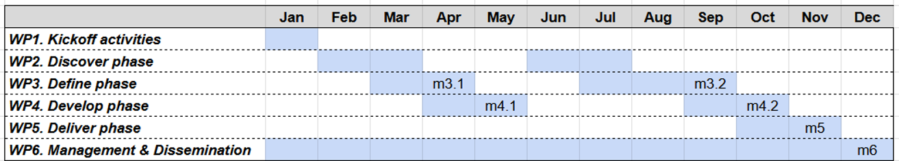

Design Thinking in support of Maritime Spatial Planning: an initial investigation (DT4MSP)
The project goal is to frame Maritime spatial planning as a Design Thinking process by designing and developing a digital supporting tool for a Double Diamond approach among the marine stakeholders. In this initial exploration, we aim to extend the current
Tools4MSP facilities with new functionalities to support structured discussions by tracking the diverging processes and facilitating the converging ones. For example, a structured approach to track agreements and disagreements, specific visualisations aimed at eliciting the understanding of subtle disagreements, the use of generative to summarise different perspectives and so on.
Background
Maritime spatial planning (MSP) is defined as “the public process of analyzing and allocating the spatial and temporal distribution of human activities to achieve ecological, economic, and social objectives that are usually specified through a political process” (Ehler & Douvere, 2007). It is conceived as a tool aimed at coherently managing the use of seas and oceans and ensuring that human activities occur efficiently, safely, and sustainably (European Commission, n.d.). Since 2016, the European Union has supported initiatives of EU countries in implementing the MSP legislation by providing regulatory directives and financial assistance for cross-border initiatives (European Commission, n.d., b).
While primarily focused on linking uses and allocating marine space effectively to accommodate and coordinate appropriate planning, mitigation, and adaptation measures, MSP strives to address a cross-sectoral approach (Enet & McDougall, 2023). Furthermore, MSP aims to continuously assess the evolving landscape of maritime plans in Europe and integrate climate-smart trends with new technological advancements into future plans (Enet, 2024).
As defined and conducted, MSP strongly resembles Design Thinking (Buchanan, 1992) as an approach to tackling wicked problems, which are complex social or cultural issues that are difficult or impossible to solve due to their interconnected and evolving nature (Rittel, 1973).
Design Thinking has been proposed as a general-purpose approach to solving complex problems through a human-centered iterative approach that focuses on understanding users, challenging assumptions, and redefining problems to identify alternative strategies and solutions (Brown, 2008; Brown, 2009). Although several models have been proposed, the
Double Diamond scheme proposed by the UK Design Council may well represent the strife to keep the discussion about the problem aligned with the ideation of the possible solutions as well as the alternation of “diverging” or creative phases with “converging” procedure able to ground practical proposal. Albeit not apparent in Figure 1, the two stages should be repeated as long as necessary to frame the problem and to develop fully shared solutions.
Project activities and milestones
The design process is organized as a Double Diamond process aimed at iteratively reaching a shared understanding of the challenges of conducting MSP sessions with several diverse stakeholders and ideating new supporting functionalities for Tools4MSP.
Three highest-priority challenges have been identified in the preliminary phase of the project:
-
Knowledge Transfer: the challenge revolves around the importance of ensuring easy access to accurate, timely, and high-quality information about the Socio-Environmental System (SES).
Present web-based solutions (e.g. Knowledge Catalogue), often collaborative in nature, allow users to contribute their data, but they need help to effectively manage this influx of information. Consequently, web-based solutions frequently contain a mixture of reliable data alongside less dependable content, which may include experimental or unverified data. Furthermore, much of the information on SES is available through heterogeneous and constantly evolving data infrastructures. These problems impact the usability and reliability of web-based solutions, making it difficult for users to discern trustworthy and updated information from less credible sources. As a result, decision-making processes based on this data may be compromised, potentially leading to suboptimal outcomes or incorrect conclusions.
-
Scenario building: the challenge involves refining the structured process for constructing and evaluating future scenarios, a core component in supporting MSP. This process aims to guide planning actions in marine areas considering environmental and socio-economic factors. In particular, we will focus on the key aspects of scenario comparison to facilitate the discussion and understanding among different stakeholders; and process tracking and monitoring to facilitate the efficient recovery of the agreements already negotiated and the different perspectives previously taken.
-
Scenario materialization and analysis: The challenge is to understand how these scenarios interdependently and indirectly modify the presence and intensity of human activities (in marine and coastal areas) and what their impacts on the Socio-Environmental System may be. For example, the establishment of a new marine protected area involves a geospatial and intensity reconfiguration of other uses, such as maritime transport or fishing. These reconfigurations entail a series of direct and indirect impacts on ecosystem components and on the social and economic system.
The project activities are organized from the four main phases of the Double Diamond process: Discover, Define, Develop, and Deliver. The first three main phases will be repeated twice to exploit the iterative principle of Design Thinking. Each repetition of the Define phase will include a formative evaluation of the proposed design solutions in terms of usability and user experience with a small set of users in controlled studies. The Deliver phase will ground the results in a design spec report for a subsequent software implementation of the results.

Gantt chart of the project (from January 2025)
Workpackages
- WP1. Kickoff activities: This WP aims to set up the project's initial activities, including the shared platform for remote collaboration and the documentation structure; the initial team of key researchers will be appointed in Trento and Venice.
- WP2. Discover phase: This WP implements the “diverging” phase of the Double Diamond process. It aims to discuss and share the problems and needs around each of the highest-priority challenges. The WP will include several brainstorming sessions held online or in person with the participation of different stakeholders. The set of activities will be repeated after the first Develop phase to discuss how the proposed solution may effectively change the nature of the problem.
- WP3. Define phase: The main activity of the WP is to prioritize the problems and the needs that emerged in the previous phase and onto which to base the following phase.
- WP4. Develop phase: This WP focuses on ideating and prototyping the proposed solutions for the problems and needs negotiated in the previous phase. The main solutions will be discussed with the core team, and formative evaluation will be undertaken with small groups of stakeholders. These activities will be repeated after the retake of the Discover and Define phases with higher fidelity of the prototypes.
- WP5. Deliver phase: This final WP will settle the final prototype solutions developed after the second iteration of the Develop phase to produce a design spec, that is, a blueprint, for developing the new Tools4MSP.
- WP6. Management & Dissemination: This WP will include the activities for coordinating between the Venice and the Trento teams and for tackling the administrative aspects of the project. It also includes reporting the results outside the project in terms of dissemination activities and writing of scientific reports.
Milestones
- m3.1 and m3.2 report the process of elicitation of the problems and needs of stakeholders in managing the MSP activities and the list of priorities for the subsequent phases of ideation;
- m4.1 and m4.2 report the process of ideation from the problems and needs that emerged in the previous phases and the design concepts, in terms of mockup and prototypes, as solutions;
- m5 is the delivery of the final blueprint for the redesign of Tools4MSP
- m6 consists of at least a paper submitted to a major journal in the field of HCI or MSP about the design process and the new tool.
Project team: